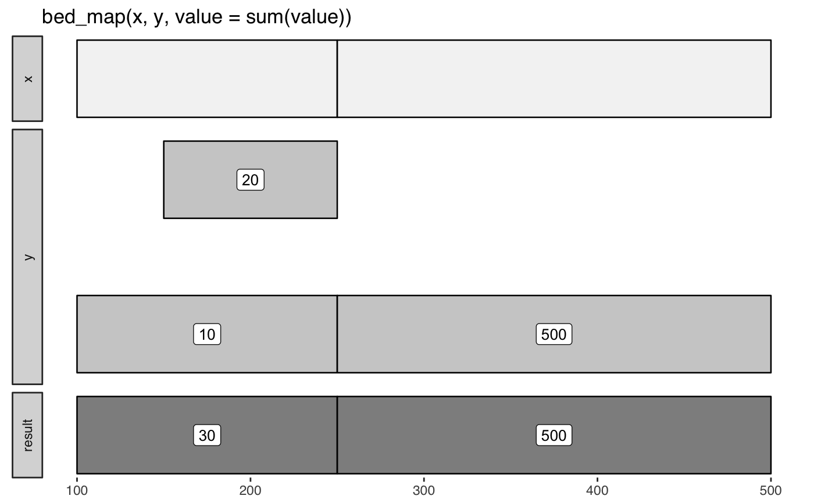

Apply functions like min() and count() to intersecting intervals.
bed_map() uses bed_intersect() to identify intersecting intervals, so
output columns will be suffixed with .x and .y. Expressions that refer to
input columns from x and y columns must take these suffixes into account.
bed_map(x, y, ..., min_overlap = 1) concat(.data, sep = ",") values_unique(.data, sep = ",") values(.data, sep = ",")
| x | |
|---|---|
| y | |
| ... | name-value pairs specifying column names and expressions to apply |
| min_overlap | minimum overlap for intervals. |
| .data | data |
| sep | separator character |
Book-ended intervals can be included by setting min_overlap = 0.
Non-intersecting intervals from x are included in the result with NA
values
input tbls are grouped by chrom by default, and additional
groups can be added using dplyr::group_by(). For example,
grouping by strand will constrain analyses to the same strand. To
compare opposing strands across two tbls, strands on the y tbl can
first be inverted using flip_strands().
http://bedtools.readthedocs.io/en/latest/content/tools/map.html
Other multiple set operations: bed_closest,
bed_coverage, bed_intersect,
bed_subtract, bed_window
x <- trbl_interval( ~chrom, ~start, ~end, 'chr1', 100, 250, 'chr2', 250, 500 ) y <- trbl_interval( ~chrom, ~start, ~end, ~value, 'chr1', 100, 250, 10, 'chr1', 150, 250, 20, 'chr2', 250, 500, 500 ) bed_glyph(bed_map(x, y, value = sum(value)), label = 'value')# summary examples bed_map(x, y, .sum = sum(value))#> # A tibble: 2 x 4 #> chrom start end .sum #> <chr> <dbl> <dbl> <dbl> #> 1 chr1 100 250 30.0 #> 2 chr2 250 500 500bed_map(x, y, .min = min(value), .max = max(value))#> # A tibble: 2 x 5 #> chrom start end .min .max #> <chr> <dbl> <dbl> <dbl> <dbl> #> 1 chr1 100 250 10.0 20.0 #> 2 chr2 250 500 500 500# identify non-intersecting intervals to include in the result res <- bed_map(x, y, .sum = sum(value)) x_not <- bed_intersect(x, y, invert = TRUE) dplyr::bind_rows(res, x_not)#> # A tibble: 2 x 4 #> chrom start end .sum #> <chr> <dbl> <dbl> <dbl> #> 1 chr1 100 250 30.0 #> 2 chr2 250 500 500# create a list-column bed_map(x, y, .values = list(value))#> # A tibble: 2 x 4 #> chrom start end .values #> <chr> <dbl> <dbl> <list> #> 1 chr1 100 250 <dbl [2]> #> 2 chr2 250 500 <dbl [1]>#> # A tibble: 2 x 4 #> chrom start end .first #> <chr> <dbl> <dbl> <dbl> #> 1 chr1 100 250 10.0 #> 2 chr2 250 500 500bed_map(x, y, .absmax = abs(max(value)))#> # A tibble: 2 x 4 #> chrom start end .absmax #> <chr> <dbl> <dbl> <dbl> #> 1 chr1 100 250 20.0 #> 2 chr2 250 500 500bed_map(x, y, .count = length(value))#> # A tibble: 2 x 4 #> chrom start end .count #> <chr> <dbl> <dbl> <int> #> 1 chr1 100 250 2 #> 2 chr2 250 500 1bed_map(x, y, .vals = values(value))#> # A tibble: 2 x 4 #> chrom start end .vals #> <chr> <dbl> <dbl> <chr> #> 1 chr1 100 250 10,20 #> 2 chr2 250 500 500# count defaults are NA not 0; differs from bedtools2 ... bed_map(x, y, .counts = n())#> # A tibble: 2 x 4 #> chrom start end .counts #> <chr> <dbl> <dbl> <int> #> 1 chr1 100 250 2 #> 2 chr2 250 500 1# ... but NA counts can be coverted to 0's dplyr::mutate(bed_map(x, y, .counts = n()), .counts = ifelse(is.na(.counts), 0, .counts))#> # A tibble: 2 x 4 #> chrom start end .counts #> <chr> <dbl> <dbl> <int> #> 1 chr1 100 250 2 #> 2 chr2 250 500 1